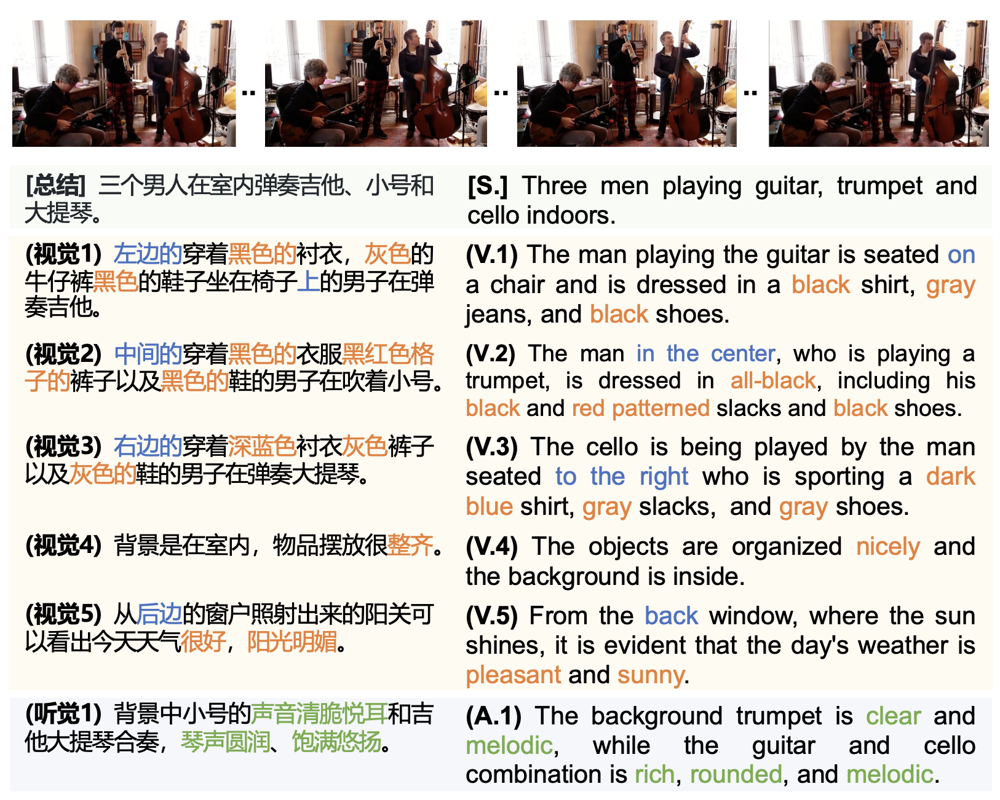
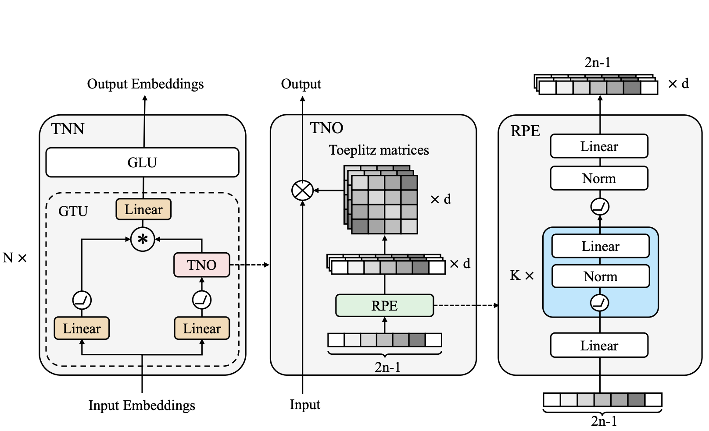
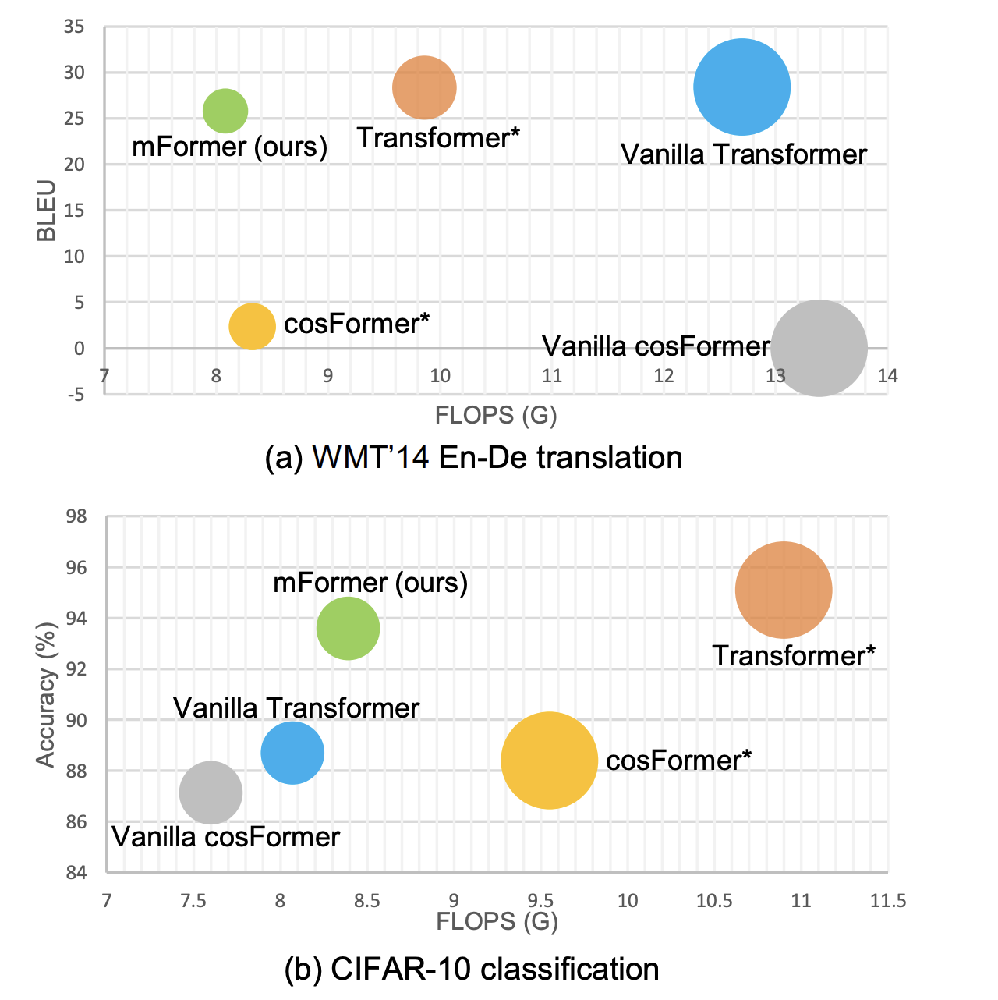
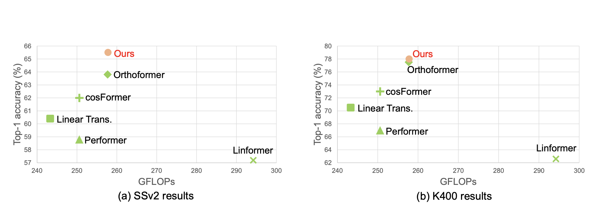

|
Research
I'm interested in Multimodal Machine Learning (MML), large language models
(LLMs), efficient Transformers and optimization. Much of my research is about
MML and LLM . Representative papers are highlighted.
|
|

|
Fine-grained Audible Video Description
Xuyang Shen*,
Dong Li*,
Jinxing Zhou*, Zhen Qin, Bowen He, Xiaodong Han, Aixuan Li, Yuchao Dai, Lingpeng
Kong, Meng Wang, Yu Qiao, Yiran Zhong
CVPR, 2023
project page
/
video
/
arXiv
We explore a new task for audio-visual-language modeling called fine-grained
audible video description (FAVD). It aims to provide detailed textual
descriptions for the given audible videos, including the appearance and spatial
locations of each object, the actions of moving objects, and the sounds in
videos.
|
|

|
Toeplitz Neural Network for Sequence Modeling
Zhen Qin, Xiaodong Han, Weixuan Sun, Bowen He, Dong Li, Dongxu Li, Yuchao Dai, Lingpeng Kong, Yiran Zhong
ICLR, 2023 (notable-top-25%)
arXiv
/
code
We propose to model sequences with a relative position encoded Toeplitz matrix and use a Toeplitz matrix-vector production trick to reduce the space-time complexity of the sequence modeling to log linear.
|
|

|
Neural Architecture Search on Efficient Transformers and Beyond
Zexiang Liu*, Dong Li*, Kaiyue Lu*, Zhen Qin, Weixuan Sun, Jiacheng Xu, Yiran Zhong
arXiv, 2022
arXiv
We propose a new framework to find optimal architectures for efficient Transformers with the neural architecture search (NAS) technique.
|
|

|
Linear Video Transformer with Feature Fixation
Kaiyue Lu, Zexiang Liu, Jianyuan Wang, Weixuan Sun, Zhen Qin, Dong Li, Xuyang Shen, Hui Deng, Xiaodong Han, Yuchao Dai, Yiran Zhong
arXiv, 2022
arXiv
We propose a feature fixation module to reweight the feature importance of the query and key before computing linear attention.
|
Feel free to steal this website's source code.
Do not scrape the HTML from this page itself, as it includes
analytics tags that you do not want on your own website — use the github
code instead. Also, consider using Leonid
Keselman's Jekyll
fork of this page.
|
|
{kind=link}